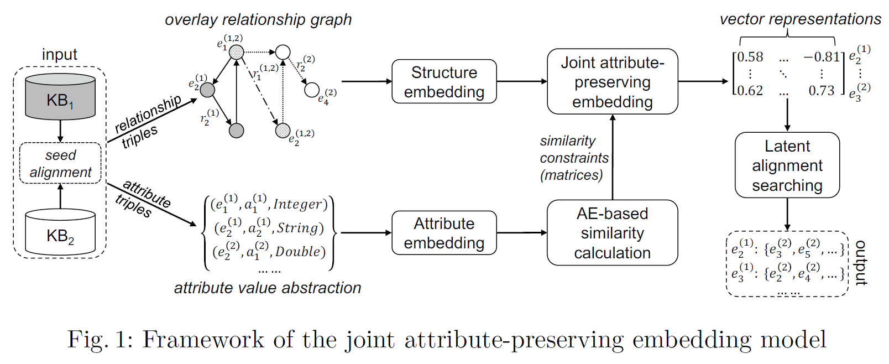
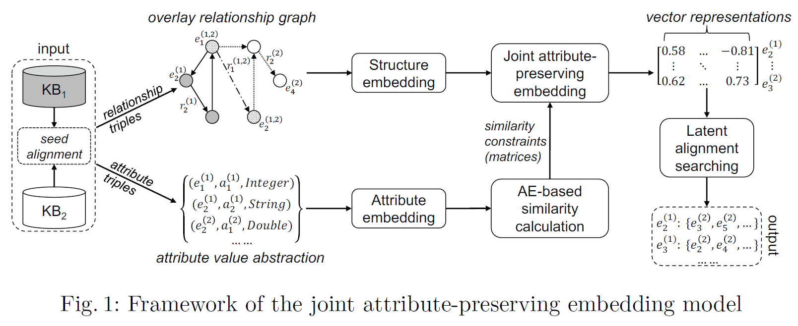

Zequn Sun, Wei Hu*, Chengkai Li. Cross-lingual Entity Alignment via Joint Attribute-Preserving Embedding. In: ISWC, 2017
Entity alignment is the task of finding entities in two knowledge bases (KBs) that represent the same real-world object. When facing KBs in different natural languages, conventional cross-lingual entity alignment methods rely on machine translation to eliminate the language barriers. These approaches often suffer from the uneven quality of translations between languages. While recent embedding-based techniques encode entities and relationships in KBs and do not need machine translation for cross-lingual entity alignment, a significant number of attributes remain largely unexplored. In this paper, we propose a joint attribute-preserving embedding model for cross-lingual entity alignment. It jointly embeds the structures of two KBs into a unified vector space and further refines it by leveraging attribute correlations in the KBs. Our experimental results on real-world datasets show that this approach significantly outperforms the state-of-the-art embedding approaches for cross-lingual entity alignment and could be complemented with methods based on machine translation.
Entity alignment is the task of finding entities in two knowledge bases (KBs) that represent the same real-world object. When facing KBs in different natural languages, conventional cross-lingual entity alignment methods rely on machine translation to eliminate the language barriers. These approaches often suffer from the uneven quality of translations between languages. While recent embedding-based techniques encode entities and relationships in KBs and do not need machine translation for cross-lingual entity alignment, a significant number of attributes remain largely unexplored. In this paper, we propose a joint attribute-preserving embedding model for cross-lingual entity alignment. It jointly embeds the structures of two KBs into a unified vector space and further refines it by leveraging attribute correlations in the KBs. Our experimental results on real-world datasets show that this approach significantly outperforms the state-of-the-art embedding approaches for cross-lingual entity alignment and could be complemented with methods based on machine translation.
Joint Attribute-Preserving Embedding
We introduce a joint attribute-preserving embedding model for cross-lingual entity alignment. It employs two modules, namely structure embedding (SE) and attribute embedding (AE), to learn embeddings based on two facets of knowledge (relationship triples and attribute triples) in two KBs, respectively. SE focuses on modeling relationship structures of two KBs and leverages existing alignment given beforehand as bridge to overlap their structures. AE captures the correlations of attributes (i.e. whether these attributes are commonly used together to describe an entity) and clusters entities based on attribute correlations. Finally, it combines SE and AE to jointly embed all the entities in the two KBs into a unified vector space. The aim of our approach is to find latent cross-lingual target entities (i.e. truly-aligned entities that we want to discover) for a source entity by searching its nearest neighbors. We expect the embeddings of latent aligned cross-lingual entities to be close to each other.

